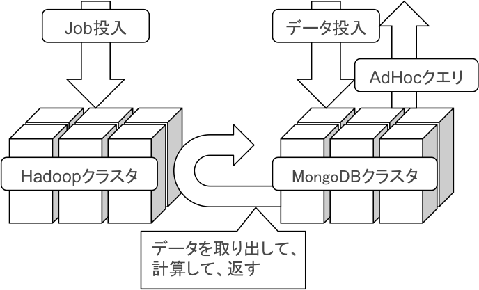

mongo-hadoopで始める大規模ログ解析
〜低コストへの新たな道〜
BigData Analysis with mongo-hadoop
MongoDB Tokyo 2012
January 18th Tokyo, Japan
Daichi Morifuji/muddydixon
ニフティ株式会社/NIFTY
自己紹介/myself

- @muddydixon
- id:muddydixon
大学/大学院
- 自然言語処理：形態素列検索・置換システム
- 言語発達の計算機シミュレーション(ElmanNet+SOMみたいな)
就職
- 検索エンジン(の広告最適化とか
- コンテンツマッチエンジンの設計開発とか
- エンジニアサポートの中の人とか
- データマイニング部門(←NEW 部門ができたよ！)
ログの解析好きですか？
ログの解析していますか？
正直、大企業じゃないときついっす
リソース・知識も無いし
@doryokujin さんがどうかしてる
「#doryokujinnero」なんてタグが生まれるくらいじゃないと厳しい
一般人が「#...nero」とか
tag付けられない範囲で
ログを解析したりする
システムを頑張ってみた！
Requeirements
Functional Requeirements
- Ad hoc query for API
- OLAP for survay
- Distributed Processing bigdata analysis
Non-Functional Requeirements
- Easily Works for non-big company
- Easy maintenance to some degree for non-experts
- Not Data loss for non-holiday works
All for
healthy sleeping
Contents
- MongoDB
- Hadoop
- mongo-hadoop
- Advance
- Conclusion
MongoDB
Cons
- OOM occurs in Map/Reduce
- Rich Resources (memory / disc)
Pros
- Schemaless
- Full Index
- Replication & High Availability
- Auto Sharding
Hadoop
Cons
- Difficulty in Operation / Tuning
- Many Daemons
- HBase needs more Daemons
- hive spends much time
Pros
- Scaleout
- Calculate Large Data by Map/Reduce
- Scalable FileSystem (HDFS) supported
Requeirements again
- Ad hoc query for API
- OLAP for survay
- Distributed Processing bigdata analysis
- Easily Works for non-big company
- Easy maintenance to some degree for non-experts
- Not Data loss for non-holiday works
and we want
- Calculate Large Data Easily (No OOM Killer)
- No more Daemons
- No more non-"Healthy" State
Cons. in MongoDB vs. Hadoop
MongoDB
- Difficulty in Calculating Large Data
Hadoop
- Too much Daemons
- Often not "Healthy" warning
- Cannot Find data in a moment (HBase is too difficalt to operate)
mongo-hadoop
mongo-hadoop
What?
mongo-hadoop is Adapter. It enables Hadoop to access MongoDB data.
mongo-hadoop supports shards and chunks enviromnent
Sample
Driver
MongoConfigUtil.setInputURI( conf, "mongodb://localhost/test.in" ); // set input host, db, collection MongoConfigUtil.setOutputURI( conf, "mongodb://localhost/test.out" ); // set output host, db, collection
Mapper
public void map( Object key, BSONObject value, Context context ) throws IOException, InterruptedException{
if ( !didStart ){
log.info( "map starting, config: " + context.getConfiguration() );
didStart = true;
}
// System.out.println( "key: " + key );
// System.out.println( "value: " + value );
String str = value.get( "line" ).toString();
if ( str != null ){
final StringTokenizer itr = new StringTokenizer( str );
while ( itr.hasMoreTokens() ){
word.set( itr.nextToken() );
context.write( word, one );
}
}
}
}
we gotta in mongo-hadoop
MongoDB Hadoop
notEasy Calculate Large Data
Hadoop MongoDB
Too muchLimited DaemonsOften not "Healthy" warningReplica set and shardingCannotCan Find data in a moment(HBase is too difficalt to operate)
Advance
Hadongo
Features
- use BSONWritable
- use Common Mapper
- use Reducer class for Combinator
- merge multipleInputResources (now pull requesting)
use BSONWritable
- BSONWritable is used as elements of Map/Reduce in Hadongo
- Mapper<Object, BSONObject, BSONWritable, BSONWritable>
- Reducer<BSONWritable, BSONWritable, BSONWritable, BSONWritable>
- using BSON means below:
- We can use "schemeless objects" consisted of String, Number, Boolean, Object, List
- We should handle them such as check existence, type validation.
use Common Mapper
- In hadoop:
we create Mappers/Reducers for distinct Data Resouces.
- In hadongo:
we create common Mappers/Reducers for distinct Processing Logics and use it to analyze many valiations.
Note: check type and existance of target values your own self.
use Reducer class for Combinator
- use BSONWritable in
- Mapper output<BSONWritable key, BSONWritable val>
- Reducer input<BSONWritable key, BSONWritable val>
- Reducer output<BSONWritable key, BSONWritable val>
- Therefore Reducer is used for Combinator Class
- And finally reducing processing is distributed in Many Mapper Processes
merge multipleInputResources (now pull requesting)
- in MongoDB: cannot merge multiple input resouces (collection)
- in practice: the case when Logs and Users are merged is asked
hadoop jar hadongo.jar com.nifty.hadongo.MergeDriver
-jobname mergeTest
-in '[{ns:"localhost:27017/multiple.in1", map:"com.nifty.hadongo.mapred.MergeMapper1"},
{ns: "localhost:27017/multiple.in2", query: {ts: {"$gt": 1293807600000}, {"$lt": 1294326000000}},
map: "com.nifty.hadongo.mapred.MultipleMapper2"},
{ns: "localhost:27017/multiple.in3", map: "com.nifty.hadongo.mapred.MultipleMapper3"}]'
-reducer com.nifty.hadongo.mapred.MergeReducer
-out localhost:27017/multiple.mergeout
plz merge @rit (@10gen) !!
hadongo (not public)
Using hadongo library, we can summarize like that
hadoop jar hodongo com.nifty.hadongo.HadongoDriver
-in localhost:27017/logs.accessLogs
-out localhost:27017/summarize.userAgents
-mapper com.nifty.hadongo.mapred.CountMapper
-reducer com.nifty.hadongo.mapred.CountReducer
-key '{"ua": []}' // the key is translated in each iteration for target Document
-query '{ts: {"$gt": 1293807600000}, {"$lt": 1294326000000}}'
-fields '{ua: 1}'
You can do it for nested keys
hadoop jar hodongo com.nifty.hadongo.HadongoDriver
-in localhost:27017/logs.searchLogs
-out localhost:27017/summarize.searchWordRankings
-mapper com.nifty.hadongo.mapred.CountMapper
-reducer com.nifty.hadongo.mapred.CountReducer
-key '{"spec.query": []}'
-query '{ts: {"$gt": 1293807600000}, {"$lt": 1294326000000}}'
-fields '{"spec.query": 1}'
Hadongo releases us
to develop Mapper/Reducer
for each summarizing Job.
Only change options!
Conclusion
- Ad hoc query for API via MongoDB
- OLAP for survay via MongoDB
- Distributed Processing bigdata analysis via Hadoop
- Easily Works for non-big company via MongoDB
- Easy maintenance to some degree for non-experts via MongoDB
- Not Data loss for non-holiday works via MongoDB
All for
healthy sleeping
Future works
Future works
- simplify BSONDecoder Class
- trim mappers for out of range chunks (now development)
宣伝
宣伝
「ユーザの生活を楽しくする」
「より楽しくお金を払ってもらえる」
「ビジネスを加速させる」
DataMiner/DataScientist
を募集しています。
つ @muddydixon
/